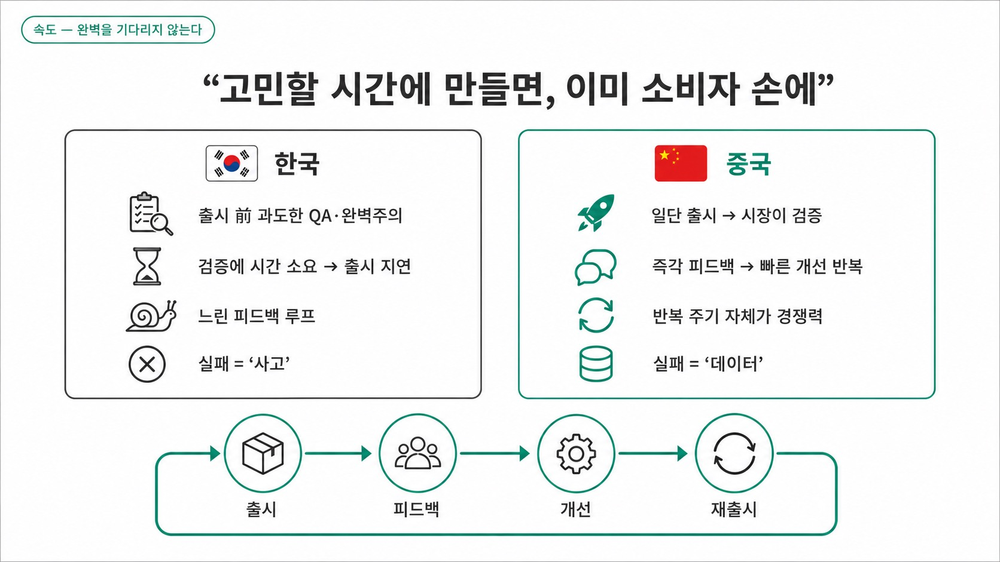
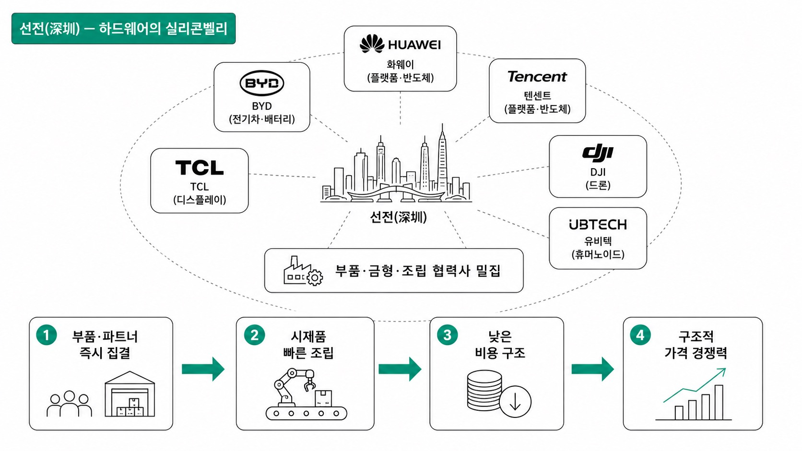
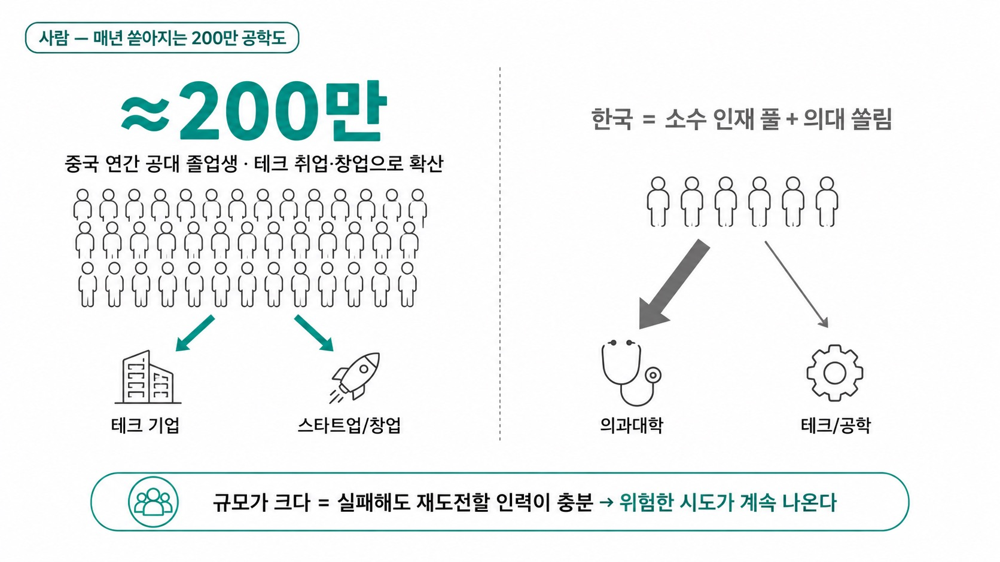
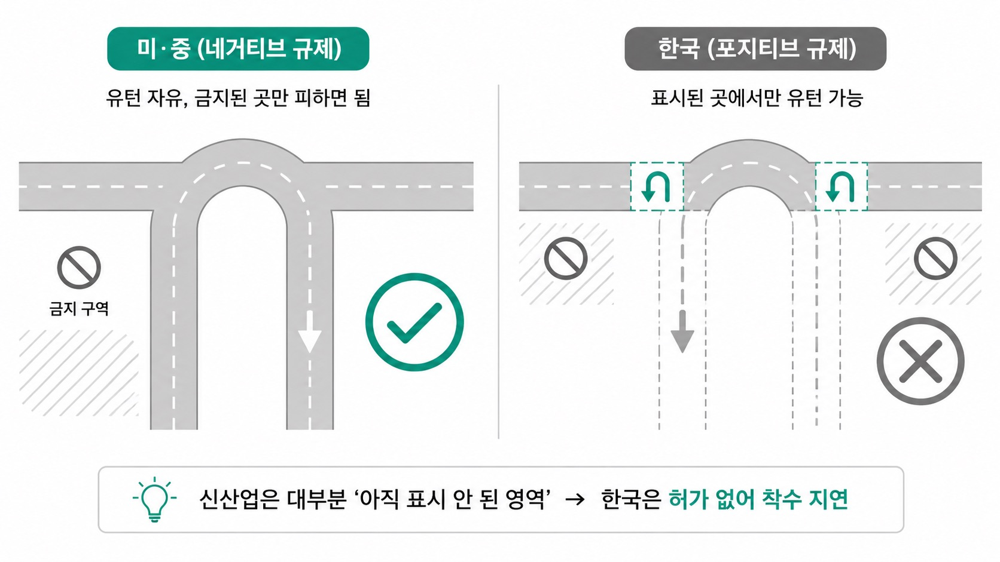
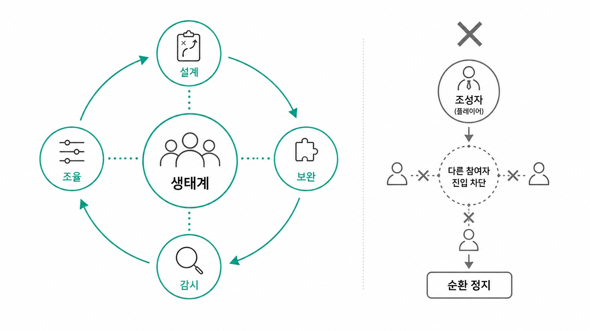

Daybreak · 자료용 슬라이드 (읽는 슬라이드)
저임금·정부지원·모방으로는 설명되지 않는다. 혁신전파사 48분 롱폼에서 관찰된 다섯 축 — 속도·공급망·인재·규제·정부 — 으로 그 구조를 정리한다.
출처 · 혁신전파사 48분 롱폼 (2026-07-02) · 글·인포그래픽 반반, 설명 없이 읽어도 이해되는 자료

중국 팀은 제품을 완벽히 다듬어 내놓기보다 최소 완성도로 일단 출시하고 시장 반응으로 나머지를 채운다. “고민할 시간에 만들면 이미 소비자 손에 있다”는 태도가 문화로 자리 잡았다.
차이는 반복 주기에서 벌어진다. 한국이 출시 전 QA·완벽주의에 시간을 쓰는 동안 중국은 출시–피드백–개선–재출시를 한 바퀴 돌린다. 반복 주기 자체가 경쟁력이 된다.

선전은 ‘하드웨어의 실리콘밸리’다. 화웨이·텐센트·BYD·DJI·유비텍·TCL 본사와 부품·금형·조립 협력사가 한 도시 반경에 촘촘히 모여 있다.
집적의 효과는 편의가 아니라 비용 구조다. 부품·파트너가 즉시 집결해 시제품을 빠르게 조립하고, 시행착오 비용이 낮아져 구조적 가격 경쟁력으로 이어진다.

중국은 매년 약 200만 명의 공대 졸업생을 배출하고 상당수가 테크 취업·창업으로 흘러든다. 한국은 공학 인재 풀이 얕고 상위권은 의대로 쏠린다.
규모가 중요한 건 머릿수가 아니라 재도전 여력이다. 실패해도 다시 시도할 인력이 충분하면 위험한 시도가 끊이지 않는다. 이 차이가 5년 뒤 산업의 종류를 가른다.

미·중은 네거티브 규제 — 금지하지 않은 건 원칙적으로 허용. 한국은 포지티브 규제 — 허용된 것만 가능. 유턴으로 치면 전자는 자유, 후자는 표시된 곳에서만이다.
문제는 신산업 대부분이 ‘아직 표시 안 된 영역’이라는 점이다. 네거티브에선 즉시 착수하지만, 포지티브에선 허가까지 착수가 지연되고 그 사이 경쟁국은 제품을 낸다.
| 분야 | 정부의 수(手) | 결과 |
|---|---|---|
| 전기차 | 충전 인프라 선확충 + 전환 강제 | 빠른 대중화 |
| 드론 배송 | 공역·안전 규율을 인프라와 동시 정비 | 조기 안착 |
정부의 역할은 돈을 뿌리는 게 아니라 순서다. 인프라를 먼저 깔아 판을 만들고, 강한 페널티를 설계한 뒤, 예외 없이 집행한다. ‘허용 후 방치’가 아니라 ‘깔아주고 강하게 관리’다.
전기차는 충전 인프라 선확충과 전환 강제로 빠르게 대중화됐고, 드론 배송은 공역·안전 규율을 인프라와 동시 정비해 조기에 안착했다. 신뢰할 수 있는 확산이 규율에서 나온다.

혁신은 개별 기업이 아니라 생태계 단위에서 일어난다. 조성자(정부·대기업)의 임무는 직접 뛰는 게 아니라 판을 오케스트레이션하는 것 — 설계·보완·감시·조율이다.
함정은, 조성자가 스스로 플레이어로 뛰면 다른 참여자의 진입이 막히고 순환이 멈춘다는 것이다. 한국은 생태계 제약으로 스타트업이 희소하고, 중국은 과잉이라 할 만큼 활발하다.
한국이 선전과 속도·물량으로 정면 경쟁하는 것은 승산이 낮다. 그러나 선전 하드웨어 에코시스템의 강점을 활용하는 협력은 다르다 — 우리의 설계·소프트웨어·브랜드에 그들의 조립·부품·속도를 결합한다.
그래서 한국이 설계해야 할 대상은 하나의 제품이 아니라 생태계 그 자체다. 조성자로서 판을 만들되, 스스로 플레이어가 되어 판을 막지 않는 것 — 다섯 축이 가리키는 방향이다.